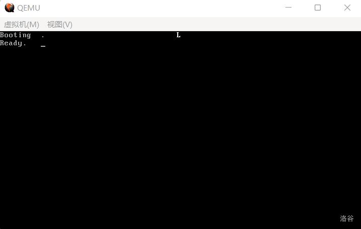

04 加载并跳入 Loader
在执行流到达 LABEL_FILENAME_FOUND 时，此时的 di 应当正好位于 Loader 所在的文件块中。因此，我们可以通过这个方法获得 Loader 的起始扇区。
获得之后我们便可以做几件事：读取第一个扇区，查找 FAT，读入下一个扇区，直至所有扇区都被读完。
不难发现我们需要多次查找 FAT，所以我们干脆把查找 FAT 的过程也包装一下，我们将使用 ax 存储待查询的扇区号，查询结果也放入 ax 中。
请把下面的代码放到 ReadSector 之后：
代码 4-1 读取 FAT 项的函数（boot.asm）
GetFATEntry:
push es
push bx
push ax ; 都会用到，push一下
mov ax, BaseOfLoader ; 获取Loader的基址
sub ax, 0100h ; 留出4KB空间
mov es, ax ; 此处就是缓冲区的基址
pop ax ; ax我们就用不到了
mov byte [bOdd], 0 ; 设置bOdd的初值
mov bx, 3
mul bx ; dx:ax=ax * 3（mul的第二重用法：如有进位，高位将放入dx）
mov bx, 2
div bx ; dx:ax / 2 -> dx：余数 ax：商
; 此处* 1.5的原因是，每个FAT项实际占用的是1.5扇区，所以要把表项 * 1.5
cmp dx, 0 ; 没有余数
jz LABEL_EVEN
mov byte [bOdd], 1 ; 那就是奇数了
LABEL_EVEN:
; 此时ax中应当已经存储了待查找FAT相对于FAT表的偏移，下面我们借此来查找它的扇区号
xor dx, dx ; dx置0
mov bx, [BPB_BytsPerSec]
div bx ; dx:ax / 512 -> ax：商（扇区号）dx：余数（扇区内偏移）
push dx ; 暂存dx，后面要用
mov bx, 0 ; es:bx：(BaseOfLoader - 4KB):0
add ax, SectorNoOfFAT1 ; 实际扇区号
mov cl, 2
call ReadSector ; 直接读2个扇区，避免出现跨扇区FAT项出现bug
pop dx ; 由于ReadSector未保存dx的值所以这里保存一下
add bx, dx ; 现在扇区内容在内存中，bx+=dx，即是真正的FAT项
mov ax, [es:bx] ; 读取之
cmp byte [bOdd], 1
jnz LABEL_EVEN_2 ; 是偶数，则进入LABEL_EVEN_2
shr ax, 4 ; 高4位为真正的FAT项
LABEL_EVEN_2:
and ax, 0FFFh ; 只保留低4位
LABEL_GET_FAT_ENRY_OK: ; 胜利执行
pop bx
pop es ; 恢复堆栈
ret
从代码中也能看到，我们的常量喜加一，把下面的代码放到 SectorNoOfRootDirectory 后面：
代码 4-2 新常量的定义（boot.asm）
SectorNoOfFAT1 equ 1 ; 第一个FAT表的开始扇区
DeltaSectorNo equ 17 ; 由于第一个簇不用，所以RootDirSectors要-2再加上根目录区首扇区和偏移才能得到真正的地址，故把RootDirSectors-2封装成一个常量（17）
可以看到，除了上文已经出现的常量以外，还定义了一个 DeltaSectorNo，其作用已经在注释中阐明。
现在是时候加载并跳入 Loader 了：
代码 4-3 加载并跳入 Loader（boot.asm）
LABEL_FILENAME_FOUND:
mov ax, RootDirSectors ; 将ax置为根目录首扇区（19）
and di, 0FFE0h ; 将di设置到此文件块开头
add di, 01Ah ; 此时的di指向Loader的FAT号
mov cx, word [es:di] ; 获得该扇区的FAT号
push cx ; 将FAT号暂存
add cx, ax ; +根目录首扇区
add cx, DeltaSectorNo ; 获得真正的地址
mov ax, BaseOfLoader
mov es, ax
mov bx, OffsetOfLoader ; es:bx：读取扇区的缓冲区地址
mov ax, cx ; ax：起始扇区号
LABEL_GOON_LOADING_FILE: ; 加载文件
push ax
push bx
mov ah, 0Eh ; AH=0Eh：显示单个字符
mov al, '.' ; AL：字符内容
mov bl, 0Fh ; BL：显示属性
; 还有BH：页码，此处不管
int 10h ; 显示此字符
pop bx
pop ax ; 上面几行的整体作用：在屏幕上打印一个点
mov cl, 1
call ReadSector ; 读取Loader第一个扇区
pop ax ; 加载FAT号
call GetFATEntry ; 加载FAT项
cmp ax, 0FFFh
jz LABEL_FILE_LOADED ; 若此项=0FFF，代表文件结束，直接跳入Loader
push ax ; 重新存储FAT号，但此时的FAT号已经是下一个FAT了
mov dx, RootDirSectors
add ax, dx ; +根目录首扇区
add ax, DeltaSectorNo ; 获取真实地址
add bx, [BPB_BytsPerSec] ; 将bx指向下一个扇区开头
jmp LABEL_GOON_LOADING_FILE ; 加载下一个扇区
LABEL_FILE_LOADED:
jmp BaseOfLoader:OffsetOfLoader ; 跳入Loader！
下面就是编译运行了，运行结果如下：

（图 4-1 成功进入 Loader）
我们成功了！屏幕第一行正中间出现了一个白色的 L！这意味着我们摆脱了引导扇区的束缚，进入了 Loader 的广阔天地！
在进入保护模式之前，我们最后休整一下。首先用下列代码清屏，它位于 mov sp, BaseOfStack 和 xor ah, ah 之间：
代码 4-4 清屏（boot.asm）
mov ax, 0600h ; AH=06h：向上滚屏，AL=00h：清空窗口
mov bx, 0700h ; 空白区域缺省属性
mov cx, 0 ; 左上：(0, 0)
mov dx, 0184fh ; 右下：(80, 25)
int 10h ; 执行
mov dh, 0
call DispStr ; Booting
下面的代码用于在加载 Loader 之前打印 Ready.
代码 4-5 打印 Ready.（boot.asm）
LABEL_FILE_LOADED:
mov dh, 1 ; 打印第 1 条消息（Ready.）
call DispStr
jmp BaseOfLoader:OffsetOfLoader ; 跳入Loader！
下图是运行结果：

（图 4-2 整理屏幕）
那么最后我们贴一下现在引导扇区的完整代码：
代码 4-6 完整的引导扇区（boot.asm）
org 07c00h ; 告诉编译器程序将装载至0x7c00处
BaseOfStack equ 07c00h ; 栈的基址
BaseOfLoader equ 09000h ; Loader的基址
OffsetOfLoader equ 0100h ; Loader的偏移
RootDirSectors equ 14 ; 根目录大小
SectorNoOfRootDirectory equ 19 ; 根目录起始扇区
SectorNoOfFAT1 equ 1 ; 第一个FAT表的开始扇区
DeltaSectorNo equ 17 ; 由于第一个簇不用，所以RootDirSectors要-2再加上根目录区首扇区和偏移才能得到真正的地址，故把RootDirSectors-2封装成一个常量（17）
jmp short LABEL_START
nop ; BS_JMPBoot 由于要三个字节而jmp到LABEL_START只有两个字节 所以加一个nop
BS_OEMName db 'tutorial' ; 固定的8个字节
BPB_BytsPerSec dw 512 ; 每扇区固定512个字节
BPB_SecPerClus db 1 ; 每簇固定1个扇区
BPB_RsvdSecCnt dw 1 ; MBR固定占用1个扇区
BPB_NumFATs db 2 ; FAT12 文件系统固定2个 FAT 表
BPB_RootEntCnt dw 224 ; FAT12 文件系统中根目录最大224个文件
BPB_TotSec16 dw 2880 ; 1.44MB磁盘固定2880个扇区
BPB_Media db 0xF0 ; 介质描述符，固定为0xF0
BPB_FATSz16 dw 9 ; 一个FAT表所占的扇区数，FAT12 文件系统固定为9个扇区
BPB_SecPerTrk dw 18 ; 每磁道扇区数，固定为18
BPB_NumHeads dw 2 ; 磁头数，bximage 的输出告诉我们是2个
BPB_HiddSec dd 0 ; 隐藏扇区数，没有
BPB_TotSec32 dd 0 ; 若之前的 BPB_TotSec16 处没有记录扇区数，则由此记录，如果记录了，这里直接置0即可
BS_DrvNum db 0 ; int 13h 调用时所读取的驱动器号，由于只挂在一个软盘所以是0
BS_Reserved1 db 0 ; 未使用，预留
BS_BootSig db 29h ; 扩展引导标记
BS_VolID dd 0 ; 卷序列号，由于只挂载一个软盘所以为0
BS_VolLab db 'OS-tutorial' ; 卷标，11个字节
BS_FileSysType db 'FAT12 ' ; 由于是 FAT12 文件系统，所以写入 FAT12 后补齐8个字节
LABEL_START:
mov ax, cs
mov ds, ax
mov es, ax ; 将ds es设置为cs的值（因为此时字符串和变量等存在代码段内）
mov ss, ax ; 将堆栈段也初始化至cs
mov sp, BaseOfStack ; 设置栈顶
mov ax, 0600h ; AH=06h：向上滚屏，AL=00h：清空窗口
mov bx, 0700h ; 空白区域缺省属性
mov cx, 0 ; 左上：(0, 0)
mov dx, 0184fh ; 右下：(80, 25)
int 10h ; 执行
mov dh, 0
call DispStr ; Booting
xor ah, ah ; 复位
xor dl, dl
int 13h ; 执行软驱复位
mov word [wSectorNo], SectorNoOfRootDirectory ; 开始查找，将当前读到的扇区数记为根目录区的开始扇区（19）
LABEL_SEARCH_IN_ROOT_DIR_BEGIN:
cmp word [wRootDirSizeForLoop], 0 ; 将剩余的根目录区扇区数与0比较
jz LABEL_NO_LOADERBIN ; 相等，不存在Loader，进行善后
dec word [wRootDirSizeForLoop] ; 减去一个扇区
mov ax, BaseOfLoader
mov es, ax
mov bx, OffsetOfLoader ; 将es:bx设置为BaseOfLoader:OffsetOfLoader，暂且使用Loader所占的内存空间存放根目录区
mov ax, [wSectorNo] ; 起始扇区：当前读到的扇区数（废话）
mov cl, 1 ; 读取一个扇区
call ReadSector ; 读入
mov si, LoaderFileName ; 为比对做准备，此处是将ds:si设为Loader文件名
mov di, OffsetOfLoader ; 为比对做准备，此处是将es:di设为Loader偏移量（即根目录区中的首个文件块）
cld ; FLAGS.DF=0，即执行lodsb/lodsw/lodsd后，si自动增加
mov dx, 10h ; 共16个文件块（代表一个扇区，因为一个文件块32字节，16个文件块正好一个扇区）
LABEL_SEARCH_FOR_LOADERBIN:
cmp dx, 0 ; 将dx与0比较
jz LABEL_GOTO_NEXT_SECTOR_IN_ROOT_DIR ; 继续前进一个扇区
dec dx ; 否则将dx减1
mov cx, 11 ; 文件名共11字节
LABEL_CMP_FILENAME: ; 比对文件名
cmp cx, 0 ; 将cx与0比较
jz LABEL_FILENAME_FOUND ; 若相等，说明文件名完全一致，表示找到，进行找到后的处理
dec cx ; cx减1，表示读取1个字符
lodsb ; 将ds:si的内容置入al，si加1
cmp al, byte [es:di] ; 此字符与LOADER BIN中的当前字符相等吗？
jz LABEL_GO_ON ; 下一个文件名字符
jmp LABEL_DIFFERENT ; 下一个文件块
LABEL_GO_ON:
inc di ; di加1，即下一个字符
jmp LABEL_CMP_FILENAME ; 继续比较
LABEL_DIFFERENT:
and di, 0FFE0h ; 指向该文件块开头
add di, 20h ; 跳过32字节，即指向下一个文件块开头
mov si, LoaderFileName ; 重置ds:si
jmp LABEL_SEARCH_FOR_LOADERBIN ; 由于要重新设置一些东西，所以回到查找Loader循环的开头
LABEL_GOTO_NEXT_SECTOR_IN_ROOT_DIR:
add word [wSectorNo], 1 ; 下一个扇区
jmp LABEL_SEARCH_IN_ROOT_DIR_BEGIN ; 重新执行主循环
LABEL_NO_LOADERBIN: ; 若找不到loader.bin则到这里
mov dh, 2
call DispStr; 显示No LOADER
jmp $
LABEL_FILENAME_FOUND:
mov ax, RootDirSectors ; 将ax置为根目录首扇区（19）
and di, 0FFE0h ; 将di设置到此文件块开头
add di, 01Ah ; 此时的di指向Loader的FAT号
mov cx, word [es:di] ; 获得该扇区的FAT号
push cx ; 将FAT号暂存
add cx, ax ; +根目录首扇区
add cx, DeltaSectorNo ; 获得真正的地址
mov ax, BaseOfLoader
mov es, ax
mov bx, OffsetOfLoader ; es:bx：读取扇区的缓冲区地址
mov ax, cx ; ax：起始扇区号
LABEL_GOON_LOADING_FILE: ; 加载文件
push ax
push bx
mov ah, 0Eh ; AH=0Eh：显示单个字符
mov al, '.' ; AL：字符内容
mov bl, 0Fh ; BL：显示属性
; 还有BH：页码，此处不管
int 10h ; 显示此字符
pop bx
pop ax ; 上面几行的整体作用：在屏幕上打印一个点
mov cl, 1
call ReadSector ; 读取Loader第一个扇区
pop ax ; 加载FAT号
call GetFATEntry ; 加载FAT项
cmp ax, 0FFFh
jz LABEL_FILE_LOADED ; 若此项=0FFF，代表文件结束，直接跳入Loader
push ax ; 重新存储FAT号，但此时的FAT号已经是下一个FAT了
mov dx, RootDirSectors
add ax, dx ; +根目录首扇区
add ax, DeltaSectorNo ; 获取真实地址
add bx, [BPB_BytsPerSec] ; 将bx指向下一个扇区开头
jmp LABEL_GOON_LOADING_FILE ; 加载下一个扇区
LABEL_FILE_LOADED:
mov dh, 1 ; 打印第 1 条消息（Ready.）
call DispStr
jmp BaseOfLoader:OffsetOfLoader ; 跳入Loader！
wRootDirSizeForLoop dw RootDirSectors ; 查找loader的循环中将会用到
wSectorNo dw 0 ; 用于保存当前扇区数
bOdd db 0 ; 这个其实是下一节的东西，不过先放在这也不是不行
LoaderFileName db "LOADER BIN", 0 ; loader的文件名
MessageLength equ 9 ; 下面是三条小消息，此变量用于保存其长度，事实上在内存中它们的排序类似于二维数组
BootMessage: db "Booting " ; 此处定义之后就可以删除原先定义的BootMessage字符串了
Message1 db "Ready. " ; 显示已准备好
Message2 db "No LOADER" ; 显示没有Loader
DispStr:
mov ax, MessageLength
mul dh ; 将ax乘以dh后，结果仍置入ax（事实上远比此复杂，此处先解释到这里）
add ax, BootMessage ; 找到给定的消息
mov bp, ax ; 先给定偏移
mov ax, ds
mov es, ax ; 以防万一，重新设置es
mov cx, MessageLength ; 字符串长度
mov ax, 01301h ; ah=13h, 显示字符的同时光标移位
mov bx, 0007h ; 黑底白字
mov dl, 0 ; 第0行，前面指定的dh不变，所以给定第几条消息就打印到第几行
int 10h ; 显示字符
ret
ReadSector:
push bp
mov bp, sp
sub esp, 2 ; 空出两个字节存放待读扇区数（因为cl在调用BIOS时要用）
mov byte [bp-2], cl
push bx ; 这里临时用一下bx
mov bl, [BPB_SecPerTrk]
div bl ; 执行完后，ax将被除以bl（每磁道扇区数），运算结束后商位于al，余数位于ah，那么al代表的就是总磁道个数（下取整），ah代表的是剩余没除开的扇区数
inc ah ; +1表示起始扇区（这个才和BIOS中的起始扇区一个意思，是读入开始的第一个扇区）
mov cl, ah ; 按照BIOS标准置入cl
mov dh, al ; 用dh暂存位于哪个磁道
shr al, 1 ; 每个磁道两个磁头，除以2可得真正的柱面编号
mov ch, al ; 按照BIOS标准置入ch
and dh, 1 ; 对磁道模2取余，可得位于哪个磁头，结果已经置入dh
pop bx ; 将bx弹出
mov dl, [BS_DrvNum] ; 将驱动器号存入dl
.GoOnReading: ; 万事俱备，只欠读取！
mov ah, 2 ; 读盘
mov al, byte [bp-2] ; 将之前存入的待读扇区数取出来
int 13h ; 执行读盘操作
jc .GoOnReading ; 如发生错误就继续读，否则进入下面的流程
add esp, 2
pop bp ; 恢复堆栈
ret
GetFATEntry:
push es
push bx
push ax ; 都会用到，push一下
mov ax, BaseOfLoader ; 获取Loader的基址
sub ax, 0100h ; 留出4KB空间
mov es, ax ; 此处就是缓冲区的基址
pop ax ; ax我们就用不到了
mov byte [bOdd], 0 ; 设置bOdd的初值
mov bx, 3
mul bx ; dx:ax=ax * 3（mul的第二重用法：如有进位，高位将放入dx）
mov bx, 2
div bx ; dx:ax / 2 -> dx：余数 ax：商
; 此处* 1.5的原因是，每个FAT项实际占用的是1.5扇区，所以要把表项 * 1.5
cmp dx, 0 ; 没有余数
jz LABEL_EVEN
mov byte [bOdd], 1 ; 那就是奇数了
LABEL_EVEN:
; 此时ax中应当已经存储了待查找FAT相对于FAT表的偏移，下面我们借此来查找它的扇区号
xor dx, dx ; dx置0
mov bx, [BPB_BytsPerSec]
div bx ; dx:ax / 512 -> ax：商（扇区号）dx：余数（扇区内偏移）
push dx ; 暂存dx，后面要用
mov bx, 0 ; es:bx：(BaseOfLoader - 4KB):0
add ax, SectorNoOfFAT1 ; 实际扇区号
mov cl, 2
call ReadSector ; 直接读2个扇区，避免出现跨扇区FAT项出现bug
pop dx ; 由于ReadSector未保存dx的值所以这里保存一下
add bx, dx ; 现在扇区内容在内存中，bx+=dx，即是真正的FAT项
mov ax, [es:bx] ; 读取之
cmp byte [bOdd], 1
jnz LABEL_EVEN_2 ; 是偶数，则进入LABEL_EVEN_2
shr ax, 4 ; 高4位为真正的FAT项
LABEL_EVEN_2:
and ax, 0FFFh ; 只保留低4位
LABEL_GET_FAT_ENRY_OK: ; 胜利执行
pop bx
pop es ; 恢复堆栈
ret
times 510 - ($ - $$) db 0
db 0x55, 0xaa ; 确保最后两个字节是0x55AA